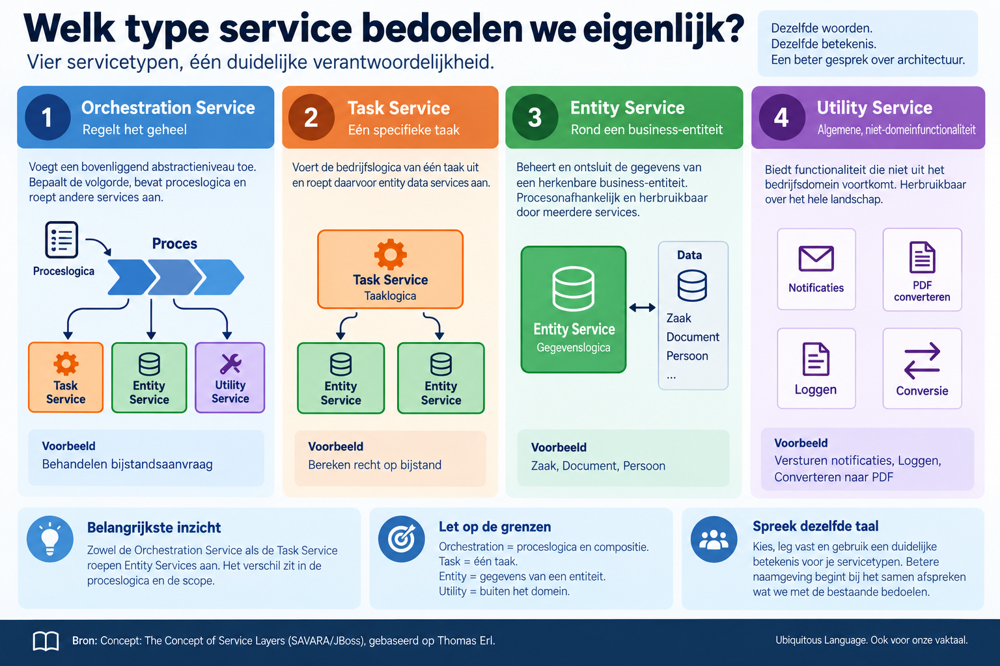

Welk type service bedoelen we eigenlijk?
Datum: 2026-09-18
Binnen een domein streven we naar een Ubiquitous Language: het idee uit Domain-Driven Design dat iedereen dezelfde woorden gebruikt voor dezelfde begrippen. Voor onze eigen vaktaal nemen we die discipline er niet altijd bij. Spreken architecten dezelfde taal als ze het over services hebben?
In architectuurplaten kom ik namen tegen als dataservice, businessservice, API-service, processervice, integratieservice en technische service. Zo'n naam zegt meestal iets over de techniek of over de plek in het landschap, en weinig over de verantwoordelijkheid. Daar komt bij dat verschillende begrippen door elkaar lopen. Een API is het contract waarmee je een service aanroept, geen soort service. Twee architecten kunnen het over dezelfde tekening eens zijn en er iets anders bij denken.
Een beperkte, expliciete indeling van servicetypen helpt dat gesprek vooruit. De SOA-literatuur biedt er een die al twintig jaar meegaat: de service models die Thomas Erl beschrijft. Geen formele standaard en geen onderdeel van DDD, maar wel een bruikbaar vertrekpunt, omdat de categorieën over functionele verantwoordelijkheid gaan en niet over techniek.

Begin bij de Entity Service. Die volgt rechtstreeks uit het domeinmodel: hij is georganiseerd rond een herkenbare business-entiteit, zoals Zaak, Document of Persoon, en beheert en ontsluit de gegevens daarvan. Zo'n service bevat wel degelijk logica — Registreer zaak doorloopt een reeks stappen — maar die logica blijft binnen de functionele context van de entiteit. Daardoor is de service procesonafhankelijk en kan dezelfde Entity Service worden hergebruikt door het bijstandsproces, het vergunningproces en het bezwaarproces.
Niet alle logica past in zo'n context. Zodra een stuk verwerking meerdere entiteitsdomeinen overspant, hoort het bij geen van die entiteiten meer thuis. Bereken recht op bijstand combineert gegevens over Persoon, Inkomen en Zaak, rekent en toetst, en is daarmee een bovenliggende taak. Daarvoor maken we een Task Service: zijn functionele grens wordt bepaald door die taak en niet door een entiteit. Zo'n service is minder herbruikbaar dan een Entity Service, en fungeert doorgaans als de controller die de meer procesonafhankelijke services samenstelt.
Een bijzondere variant daarvan is de Orchestrated Task Service. Dat is een Task Service waarvan het onderliggende proces als procesdefinitie in een orkestratieplatform is ondergebracht, bijvoorbeeld Behandelen bijstandsaanvraag. Functioneel is het hetzelfde idee — een taak die andere services aanstuurt — maar de ontwerpkenmerken verschillen door die techniek, en daarom krijgt hij een eigen etiket. Je komt hem ook tegen als processervice of orchestration service, wat meteen laat zien hoe snel de spraakverwarring ontstaat.
Buiten het domein staat ten slotte de Utility Service: functionaliteit die niet uit het bedrijfsdomein voortkomt, zoals versturen van notificaties, loggen of converteren naar PDF. Herbruikbaar over het hele landschap, maar je vindt de logica niet terug in een bedrijfsmodel of zaaktype.
Deze vier staan niet allemaal op hetzelfde niveau, en dat is geen slordigheid. Entity en Task zijn twee manieren om de functionele grens van een service te bepalen: rond een entiteit of rond een taak. Orchestrated Task is een uitvoeringsvariant van Task. Utility onderscheidt zich doordat de logica buiten het domein ontstaat. Benoem je dat, dan blijven grensgevallen — is Plan afspraak nu een taak of een entiteit? — een gesprek over het ontwerp in plaats van over de indeling.
Blijft zo'n indeling uit de SOA-tijd bruikbaar? Voor het doel dat ik hier beschrijf wel. De onderliggende vraag, welke verantwoordelijkheid hoort bij deze service, is niet veranderd sinds we het over microservices en API's zijn gaan hebben. Wat een organisatie ervan overneemt is haar eigen keuze: vier categorieën, drie, of een eigen indeling die beter bij het domein past.
Belangrijker dan welke beperkte classificatie we kiezen, is dat we expliciet afspreken wat onze servicetypen betekenen en dat vastleggen waar architecten het kunnen terugvinden. Betere naamgeving begint niet bij het bedenken van nóg een servicetype, maar bij het samen vaststellen wat we met de bestaande bedoelen.
Bronnen: Concept: The Concept of Service Layers (SAVARA/JBoss) en Thomas Erl, Service Models (task services en orchestrated task services).